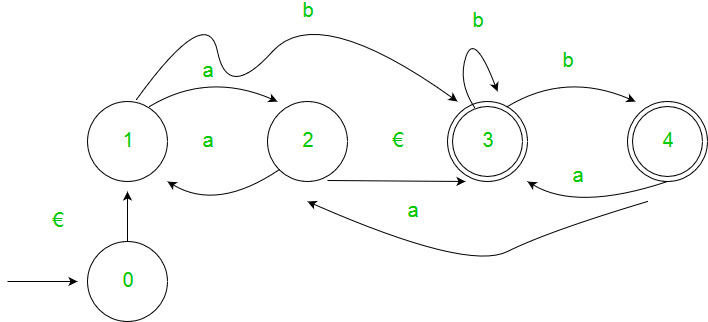
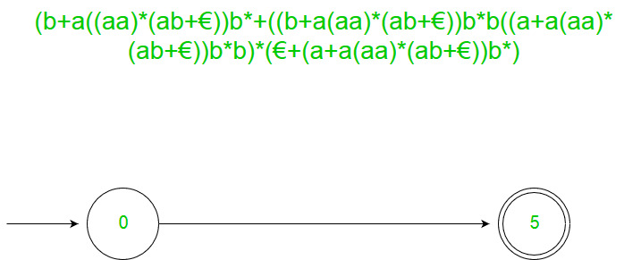

Prerequisite – Introduction of FA, Regular expressions, grammar and language, Designing FA from Regular Expression
There are two methods to convert FA to regular expression –
1. State Elimination Method –
- Step 1 –
If the start state is an accepting state or has transitions in, add a new non-accepting start state and add an €-transition between the new start state and the former start state. - Step 2 –
If there is more than one accepting state or if the single accepting state has transitions out, add a new accepting state, make all other states non-accepting, and add an €-transition from each former accepting state to the new accepting state. - Step 3 –
For each non-start non-accepting state in turn, eliminate the state and update transitions accordingly.
Example :-

Solution :-
Step 1

Step 2

Step 3



2. Arden’s Theorem – Let P and Q be 2 regular expressions. If P does not contain null string, then following equation in R, viz R = Q + RP, Has a unique solution by R = QP*
Assumptions –
- The transition diagram should not have €-moves.
- It must have only one initial state.
Using Arden’s Theorem to find Regular Expression of Deterministic Finite automata –
- For getting the regular expression for the automata we first create equations of the given form for all the states
q1 = q1w11 +q2w21 +…+qnwn1 +€ (q1 is the initial state)
q2 = q1w12 +q2w22 +…+qnwn2
.
.
.
qn = q1w1n +q2w2n +…+qnwnn
wij is the regular expression representing the set of labels of edges from qi to qjNote – For parallel edges there will be that many expressions for that state in the expression.
- Then we solve these equations to get the equation for qi in terms of wij and that expression is the required solution, where qi is a final state.
Example :-

Solution :-
Here the initial state is q2 and the final state is q1.
The equations for the three states q1, q2, and q3 are as follows ?
q1 = q1a + q3a + € ( € move is because q1 is the initial state)
q2 = q1b + q2b + q3b
q3 = q2a
Now, we will solve these three equations ?
q2 = q1b + q2b + q3b
= q1b + q2b + (q2a)b (Substituting value of q3)
= q1b + q2(b + ab)
= q1b (b + ab)* (Applying Arden’s Theorem)
q1 = q1a + q3a + €
= q1a + q2aa + € (Substituting value of q3)
= q1a + q1b(b + ab*)aa + € (Substituting value of q2)
= q1(a + b(b + ab)*aa) + €
= € (a+ b(b + ab)*aa)*
= (a + b(b + ab)*aa)*
Hence, the regular expression is (a + b(b + ab)*aa)*.
GATE CS Corner Questions
Practicing the following questions will help you test your knowledge. All questions have been asked in GATE in previous years or in GATE Mock Tests. It is highly recommended that you practice them.
- GATE CS 2008, Question 52
- GATE CS 2007, Question 74
- GATE CS 2014 (Set-1), Question 25
- GATE CS 2014 (Set-1), Question 65
- GATE IT 2006, Question 5
- GATE CS 2013, Question 33
- GATE CS 2012, Question 12